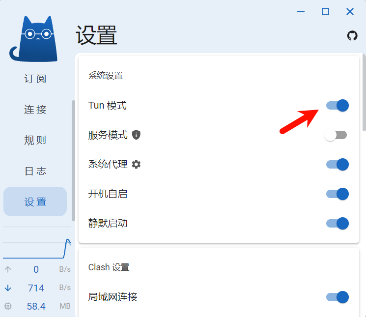

Lab 7：putting it all together
1.概述
到目前为止，在课程学习过程中，已经逐步实现了互联网基础设施的重要部分。从检查点 0（可靠字节流），到检查点 1 - 3（传输控制协议），检查点 5（IP / 以太网网络接口）以及检查点 6（IP 路由器），已经完成了大量的编码工作。
在本次检查点中，不一定需要进行新的编码（前提是之前的检查点工作状态良好）。相反，为了总结之前的成果，将利用之前所有的实验内容创建一个真实的网络，在这个网络中，自己实现的网络栈（主机和路由器）能够与其他同学实现的网络栈进行通信。
2.准备开始
|
|
3. 实现网络通信
在本次实验中，将创建一个真实网络，整合自己的网络栈与班上其他同学实现的网络栈。双方各提供一个主机（包括可靠字节流、TCP 实现和网络接口）和一个路由器。由于可能位于网络地址转换（NAT）之后，双方网络连接将通过中继服务器（cs144.keithw.org）进行。
实验步骤
- 自行测试（可选）
- 可在虚拟机的两个不同窗口或终端中分别扮演客户端和服务器角色，使用自己的代码进行通信测试，便于调试。测试成功后再与伙伴合作。
注意：如果使用WSL代理，发现无法通信可能需要打开clash的tun模式



- 选择中继标识
- 随机选择一个 1024 到 64000 之间的偶数作为实验室小组标识，需与其他同时工作的小组不同，假设选择 “3000”（实际应选其他数）。
- 服务器端操作
- 服务器端学生在 “build” 目录下运行
./apps/endtoend server cs144.keithw.org 3000（3000 替换为实际所选数字），若成功，将打印网络接口信息、添加路由信息以及监听连接的相关输出。
- 客户端操作
- 客户端学生在 “build” 目录下运行
./apps/endtoend client cs144.keithw.org 3001（3001 为所选数字加 1），若成功，将打印网络接口信息、添加路由信息、连接过程的输出，服务器端将打印新连接信息。
- 验证连接与数据交换
- 若双方看到预期输出，表明成功完成 TCP 握手，可进行数据交换，在一端输入内容，应在另一端显示，尝试双向输入。结束连接时，输入 Ctrl - D，验证字节流结束和程序正常退出情况。
- 调试模式（可选）
- 若未看到预期输出，可在运行 “endtoend” 程序时添加 “debug” 参数，打印交换的以太网帧，查看 ARP 和 TCP/IP 帧信息。
- 与伙伴合作测试
- 在自己计算机上两个窗口间测试成功后，与实验伙伴（及其实现）按照相同步骤进行测试。
实测通信成功！